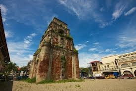
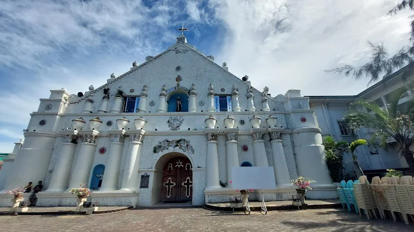
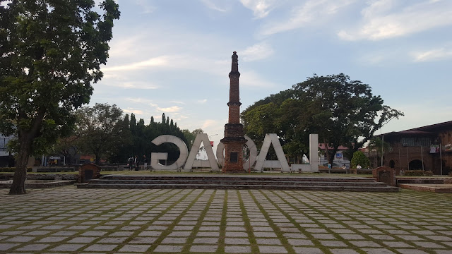

Sinking Bell Tower

Museo Laoag

Saint William’s Cathedral (Diocese of Laoag)

Abolition of Tobacco Monopoly Monument
Adventure and Filipino Charm
Officially the City of Laoag (Ilocano: Siudad ti Laoag; Filipino: Lungsod ng Laoag), is a component city and capital of the province of Ilocos Norte, Philippines. According to the 2024 census, it has a population of 112,117 people.
It is the province's most populous settlement, as well as its political, commercial, and industrial hub. The Ilocos Region's busiest commercial airport is also built in Laoag. It is also the northernmost city in the Philippines.
The municipalities of San Nicolas, Paoay, Sarrat, Piddig, Vintar, and Bacarra form its boundaries. The foothills of the Cordillera Central mountain range to the east, and the South China Sea to the west are its physical boundaries.
Laoag experiences a prevailing monsoon climate of Northern Luzon, characterized by a dry season from November to April and a wet season from May to October. Despite being battered by powerful typhoons occasionally, Laoag can still be referred to as the "Sunshine City".
Laoag City, the capital of Ilocos Norte, is a vibrant destination in the northwestern Philippines known as the "Sunshine City," a name derived from the Ilocano word for "Naranyag" As the province's primary commercial and cultural hub, Laoag seamlessly blends a rich Spanish colonial heritage with unique natural landscapes. The city's center is a treasury of history, featuring the famous Sinking Bell Tower , a massive 17th-century brick belfry that is slowly descending into the sandy ground, and the adjacent St. William's Cathedral. Just a short drive away are the renowned La Paz Sand Dunes, which offer a thrilling playground for 4x4 jeep rides and sandboarding. Furthermore, Laoag serves as the primary gateway for exploring other iconic Ilocos Norte sites, including the UNESCO World Heritage-listed Paoay Church and the former presidential residence, Malacañang of the North. Visitors are also drawn to its distinct Ilocano cuisine, featuring savory specialties like bagnet and longganisa. Laoag City, therefore, offers a compelling mix of historical exploration, natural adventure, and authentic Filipino flavors.
Sinking Bell Tower
Museo Laoag
Saint William’s Cathedral (Diocese of Laoag)
Abolition of Tobacco Monopoly Monument
C 2025 LAOAG CITY. All Rights Reserved.